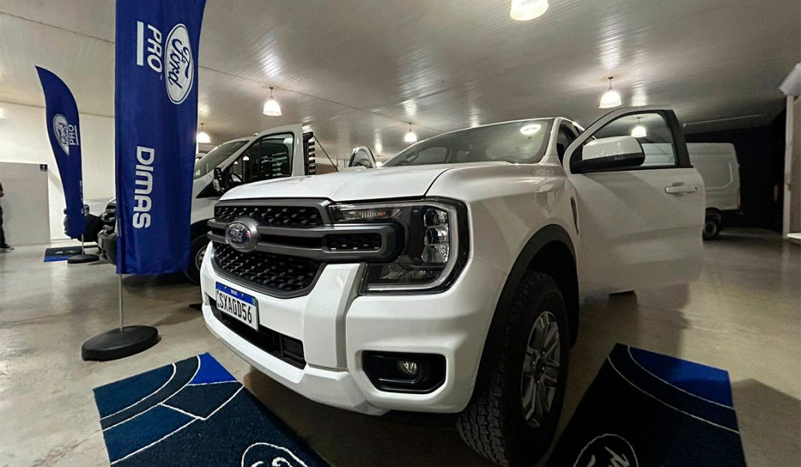

Tecnologia focada no desempenho: Ford Pro apresenta linha Ford Transit 2025 em jantar para empresários do Vale do Itajaí
Uma das principais novidades é o Transit Chassi, que permite rodado duplo traseiro com a utilização da CNH categoria B
A Ford Pro realizou, na noite de segunda-feira, dia 9, em Botuverá, um evento especial destinado
a
empresários da região de Brusque, Botuverá e Guabiruba. Na ocasião, apresentou a nova linha Ford
Transit
2025, com foco em vans e chassis, trazendo o que há de
mais avançado em tecnologia automotiva do setor.
Como destaque especial, também deu oportunidade
para
que os empresários pudessem conhecer modelos especiais da Ranger, caminhonete que traz no design
um
forte DNA americano.
Renato Bischoff, coordenador de vendas da Ford Pro em Florianópolis, destacou a importância de
Brusque e
região para a marca.
“Brusque concentra centenas de empresas de diferentes segmentos, muitas com atuação nacional e
internacional. A Ford quer fazer parte desse desenvolvimento, oferecendo soluções sob medida
para
empresas de turismo, logística, distribuição e produção”, afirmou
Entre as principais inovações da nova linha Transit, Bischoff ressaltou o câmbio automático e a
tração
traseira, que proporcionam mais conforto e baixo custo de manutenção.
“Outro diferencial é a Transit chassi, que permite rodado duplo traseiro com a utilização da CNH
categoria B, tornando-a uma opção acessível e versátil para o empresário”, complementa Renato.
Além da apresentação dos veículos, o evento também contou com um jantar focado na cultura
italiana.
Segundo Bischoff, a proposta foi criar um ambiente descontraído para fortalecer os laços com os
empresários da região e apresentar as vantagens que a Ford Pro oferece
“Nosso objetivo é que o empresário possa focar em produzir e crescer durante o dia e fazer a
manutenção
à noite, sem perder receitas. Esse atendimento noturno é uma das vantagens de ser Ford”.
Para o coordenador, o evento também foi uma oportunidade única para os empresários conhecerem de
perto
as soluções inovadoras da Ford Pro. “Queremos estreitar relações com a marca, que busca
contribuir
diretamente para o crescimento das empresas da região”, concluiu.